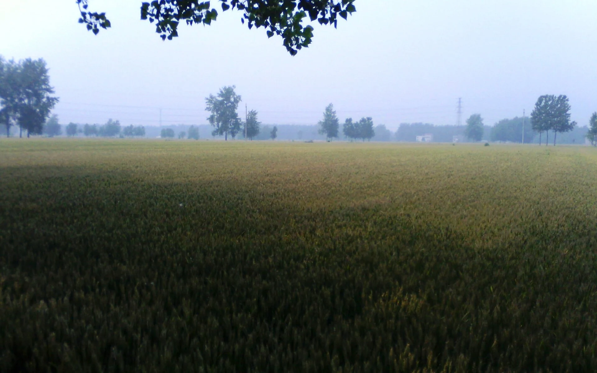

NOTE / 01
科技小院：
科技小院：
把问题留在村里
第一次去科技小院，我以为自己是去“指导”的。到了才发现，农民才是老师。土壤、墒情、病虫害，他们看一眼就知道；我们要学的，是怎样把实验室里的数据，翻译成一句能听懂的话。

FIELD / 田野课堂
在甘农，很多课没有围墙。科技小院在村里，试验田在风里，老师的办公室可能是一块刚出苗的地。我们带着笔记本下去，带着问题回来。
这一页，记录三次“下地”的经历，也记录四个从实验室走向田野的作物。它们让我明白：农业科学不是抽象的名词，它要经得起日晒、虫害和一场突如其来的霜冻。
第一次去科技小院，我以为自己是去“指导”的。到了才发现，农民才是老师。土壤、墒情、病虫害，他们看一眼就知道；我们要学的，是怎样把实验室里的数据，翻译成一句能听懂的话。

七月的太阳很毒。我们背着设备走村入户，做问卷、拍素材、帮老乡收菜。晚上回到住处，蚊子很多，但大家还在讨论白天听到的故事。
育种是一场漫长的等待。播种、观察、记录、淘汰，一年又一年。老师说，做农业要有耐心，因为作物不会因为你的着急就提前成熟。
04 / 作物实验室
点击下方标签，查看四种作物 / 装备的学习笔记。条形图是相对示意，不是官方统计，只用来帮助理解它们各自的特点。
Processing potato / SOLANUM TUBEROSUM
加工型马铃薯新品种，亩产超万斤。从脱毒种薯到田间管理，每一步都要和土地反复商量。它不只是一个品种，也是一条从试验田通向加工车间的产业链。
05 / 生长刻度
拖动下面的刻度，看看一株冬小麦从秋播到成熟，怎样一点点长高。作物不会说话，但它的每一片叶子，都在记录时间。